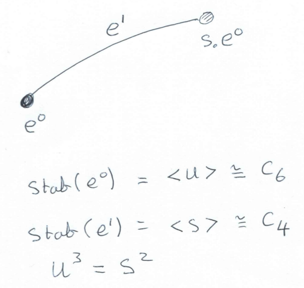
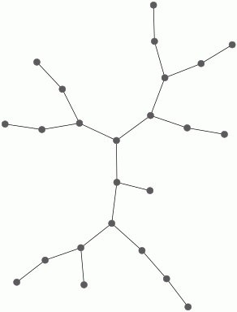
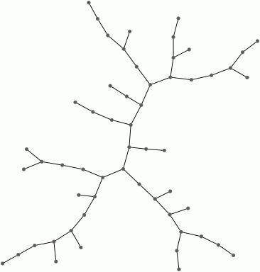
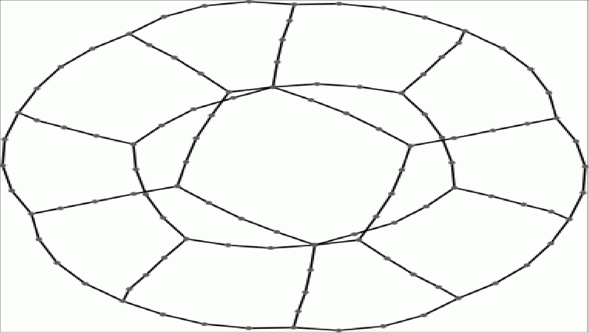
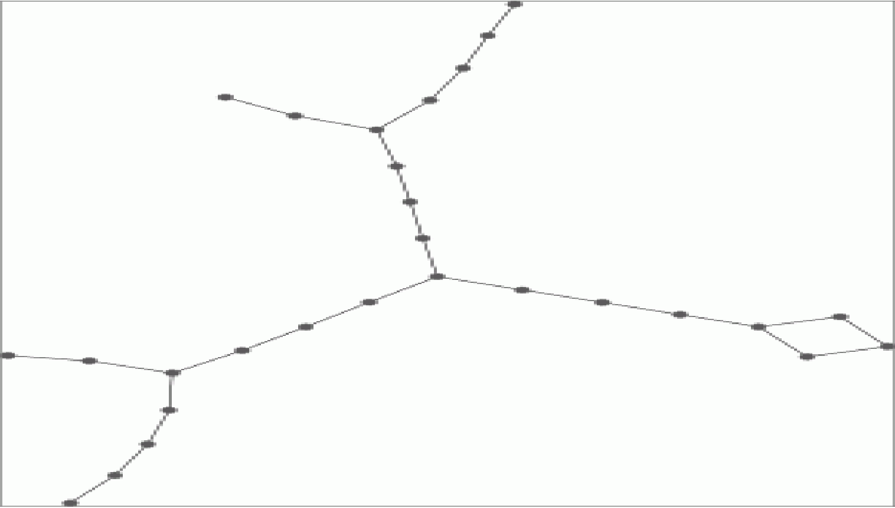
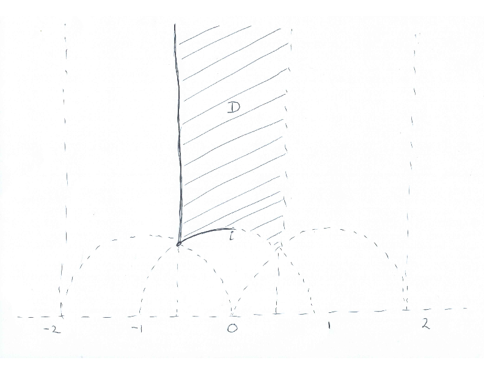
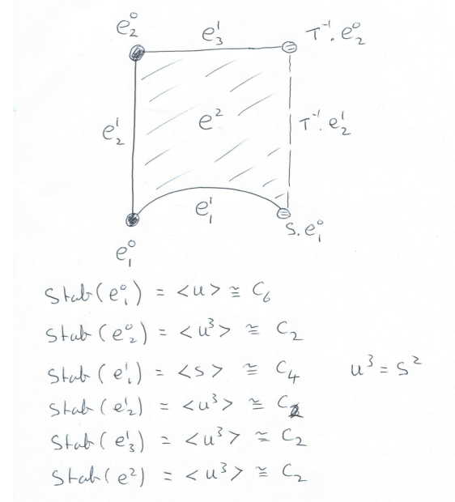
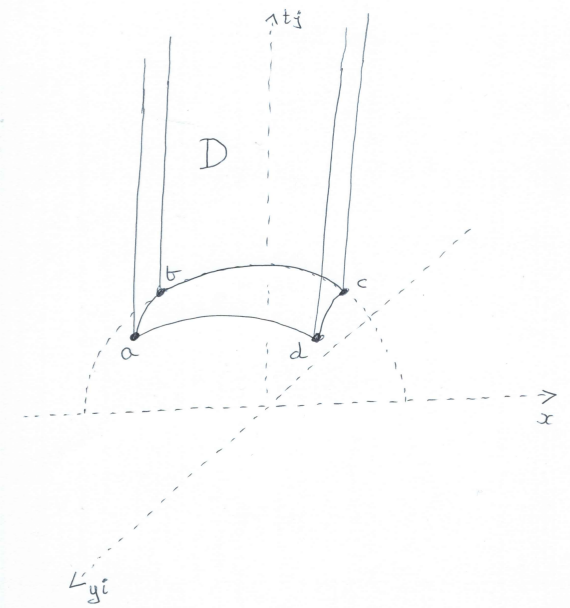
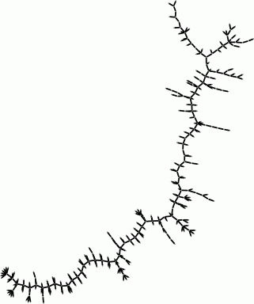
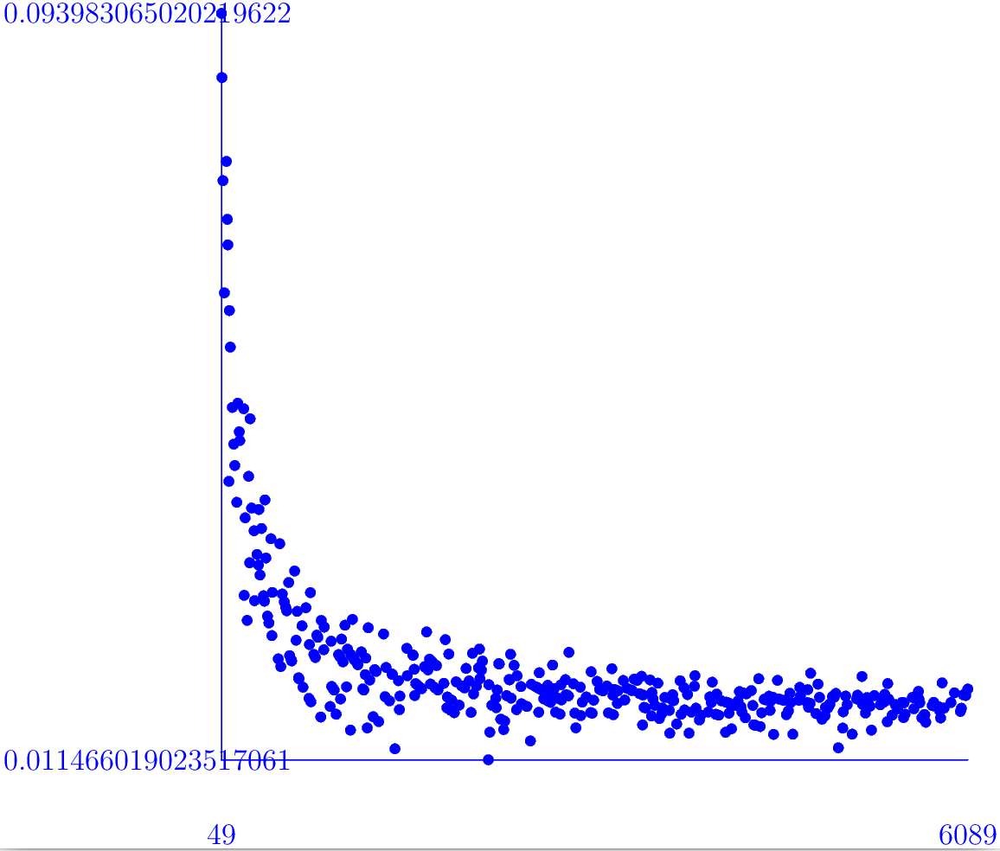

In this chapter we explain how HAP can be used to make computions about modular forms associated to congruence subgroups Γ of SL_2( Z). Also, in Subsection 10.8 onwards, we demonstrate cohomology computations for the Picard group SL_2( Z[i]), some Bianchi groups PSL_2(cal O_-d) where cal O_d is the ring of integers of Q(sqrt-d) for square free positive integer d, and some other groups of the form SL_m(cal O), GL_m(cal O), PSL_m(cal O), PGL_m(cal O), for m=2,3,4 and certain cal O= Z, cal O_-d.
We begin by recalling the Eichler-Shimura isomorphism [Eic57][Shi59]
S_k(\Gamma) \oplus \overline{S_k(\Gamma)} \oplus E_k(\Gamma) \cong_{\sf Hecke} H^1(\Gamma,P_{\mathbb C}(k-2))
which relates the cohomology of groups to the theory of modular forms associated to a finite index subgroup Γ of SL_2( Z). In subsequent sections we explain how to compute with the right-hand side of the isomorphism. But first, for completeness, let us define the terms on the left-hand side.
Let N be a positive integer. A subgroup Γ of SL_2( Z) is said to be a congruence subgroup of level N if it contains the kernel of the canonical homomorphism π_N: SL_2( Z) → SL_2( Z/N Z). So any congruence subgroup is of finite index in SL_2( Z), but the converse is not true.
One congruence subgroup of particular interest is the group Γ(N)=ker(π_N), known as the principal congruence subgroup of level N. Another congruence subgroup of particular interest is the group Γ_0(N) of those matrices that project to upper triangular matrices in SL_2( Z/N Z).
A modular form of weight k for a congruence subgroup Γ is a complex valued function on the upper-half plane, f: frakh}={z∈ C : Im(z)>0} → C, satisfying:
displaystyle f(fracaz+bcz+d) = (cz+d)^k f(z) for (beginarraylla&b c &d endarray) ∈ Γ,
f is `holomorphic' on the extended upper-half plane frakh^∗ = frakh ∪ Q ∪ {∞} obtained from the upper-half plane by `adjoining a point at each cusp'.
The collection of all weight k modular forms for Γ form a vector space M_k(Γ) over C.
A modular form f is said to be a cusp form if f(∞)=0. The collection of all weight k cusp forms for Γ form a vector subspace S_k(Γ). There is a decomposition
M_k(\Gamma) \cong S_k(\Gamma) \oplus E_k(\Gamma)
involving a summand E_k(Γ) known as the Eisenstein space. See [Ste07] for further introductory details on modular forms.
The Eichler-Shimura isomorphism is more than an isomorphism of vector spaces. It is an isomorphism of Hecke modules: both sides admit notions of Hecke operators, and the isomorphism preserves these operators. The bar on the left-hand side of the isomorphism denotes complex conjugation, or anti-holomorphic forms. See [Wie78] for a full account of the isomorphism.
On the right-hand side of the isomorphism, the ZΓ-module P_ C(k-2)⊂ C[x,y] denotes the space of homogeneous degree k-2 polynomials with action of Γ given by
\left(\begin{array}{ll}a&b\\ c &d \end{array}\right)\cdot p(x,y) = p(dx-by,-cx+ay)\ .
In particular P_ C(0)= C is the trivial module. Below we shall compute with the integral analogue P_ Z(k-2) ⊂ Z[x,y].
In the following sections we explain how to use the right-hand side of the Eichler-Shimura isomorphism to compute eigenvalues of the Hecke operators restricted to the subspace S_k(Γ) of cusp forms.
The matrices S=(beginarrayrr0&-1 1 &0 endarray) and T=(beginarrayrr1&1 0 &1 endarray) generate SL_2( Z) and it is not difficult to devise an algorithm for expressing an arbitrary integer matrix A of determinant 1 as a word in S, T and their inverses. The following illustrates such an algorithm.
gap> A:=[[4,9],[7,16]];; gap> word:=AsWordInSL2Z(A); [ [ [ 1, 0 ], [ 0, 1 ] ], [ [ 0, 1 ], [ -1, 0 ] ], [ [ 1, -1 ], [ 0, 1 ] ], [ [ 0, 1 ], [ -1, 0 ] ], [ [ 1, 1 ], [ 0, 1 ] ], [ [ 0, 1 ], [ -1, 0 ] ], [ [ 1, -1 ], [ 0, 1 ] ], [ [ 1, -1 ], [ 0, 1 ] ], [ [ 1, -1 ], [ 0, 1 ] ], [ [ 0, 1 ], [ -1, 0 ] ], [ [ 1, 1 ], [ 0, 1 ] ], [ [ 1, 1 ], [ 0, 1 ] ] ] gap> Product(word); [ [ 4, 9 ], [ 7, 16 ] ]
It is convenient to introduce the matrix U=ST = (beginarrayrr0&-1 1 &1 endarray). The matrices S and U also generate SL_2( Z). In fact we have a free presentation SL_2( Z)= ⟨ S,U | S^4=U^6=1, S^2=U^3 ⟩.
The cubic tree cal T is a tree (i.e. a 1-dimensional contractible regular CW-complex) with countably infinitely many edges in which each vertex has degree 3. We can realize the cubic tree cal T by taking the left cosets of cal U=⟨ U⟩ in SL_2( Z) as vertices, and joining cosets xcal U and ycal U by an edge if, and only if, x^-1y ∈ cal U Scal U. Thus the vertex cal U is joined to Scal U, UScal U and U^2Scal U. The vertices of this tree are in one-to-one correspondence with all reduced words in S, U and U^2 that, apart from the identity, end in S.
From our realization of the cubic tree cal T we see that SL_2( Z) acts on cal T in such a way that each vertex is stabilized by a cyclic subgroup conjugate to cal U=⟨ U⟩ and each edge is stabilized by a cyclic subgroup conjugate to cal S =⟨ S ⟩.
In order to store this action of SL_2( Z) on the cubic tree cal T we just need to record the following finite amount of information.

It is useful to invoke the following general result which follows from a perturbation result about free ZG-resolutons in [EHS06, Theorem 2] and an old observation of John Milnor that a free ZG-resolution can be realized as the cellular chain complex of a CW-complex if it can be so realized in low dimensions.
Theorem. Let X be a contractible CW-complex on which a group G acts by permuting cells. The cellular chain complex C_∗ X is a ZG-resolution of Z which typically is not free. Let [e^n] denote the orbit of the n-cell e^n under the action. Let G^e^n ≤ G denote the stabilizer subgroup of e^n, in which group elements are not required to stabilize e^n point-wise. Let Y_e^n denote a contractible CW-complex on which G^e^n acts cellularly and freely. Then there exists a contractible CW-complex W on which G acts cellularly and freely, and in which the orbits of n-cells are labelled by [e^p]⊗ [f^q] where p+q=n and [e^p] ranges over the G-orbits of p-cells in X, [f^q] ranges over the G^e^p-orbits of q-cells in Y_e^p.
Let W be as in the theorem. Then the quotient CW-complex B_G=W/G is a classifying space for G. Let T denote a maximal tree in the 1-skeleton B^1_G. Basic geometric group theory tells us that the 1-cells in B^1_G∖ T correspond to a generating set for G.
Suppose we wish to compute a set of generators for a principal congruence subgroup Γ=Γ(N),N>2. In the above theorem take X=cal T to be the cubic tree, and note that Γ acts freely on cal T and thus that W=cal T. To determine the 1-cells of B_Γ∖ T we need to determine a cellular subspace D_Γ ⊂ cal T whose images under the action of Γ cover cal T and are pairwise either disjoint or identical. The subspace D_Γ will not be a CW-complex as it won't be closed, but it can be chosen to be connected, and hence contractible. We call D_Γ a fundamental region for Γ. We denote by mathring D_Γ the largest CW-subcomplex of D_Γ. The vertices of mathring D_Γ are the same as the vertices of D_Γ. Thus mathring D_Γ is a subtree of the cubic tree with |SL_2( Z):Γ|/6 vertices. For each vertex v in the tree mathring D_Γ define η(v)=3 - degree(v). Then the number of generators for Γ will be (1/2)∑_v∈ mathring D_Γ η(v).
The following commands determine generators for Γ(6) and display mathring D_Γ(6). The subgroup Γ(6) is free on 13 generators.
gap> G:=HAP_PrincipalCongruenceSubgroup(6);; gap> HAP_SL2TreeDisplay(G); gap> gens:=GeneratorsOfGroup(G); [ [ [ -83, -18 ], [ 60, 13 ] ], [ [ -77, -18 ], [ 30, 7 ] ], [ [ -65, -12 ], [ 168, 31 ] ], [ [ -53, -12 ], [ 84, 19 ] ], [ [ -47, -18 ], [ 222, 85 ] ], [ [ -41, -12 ], [ 24, 7 ] ], [ [ -35, -6 ], [ 6, 1 ] ], [ [ -11, -18 ], [ 30, 49 ] ], [ [ -11, -6 ], [ 24, 13 ] ], [ [ -5, -18 ], [ 12, 43 ] ], [ [ -5, -12 ], [ 18, 43 ] ], [ [ -5, -6 ], [ 6, 7 ] ], [ [ 1, 0 ], [ -6, 1 ] ] ]

A related approach to the problem of computing independent generators ( = no nontrivial identities between them) of congruence subgroups of SL_2( Z) is described in [Kul91]. The principal congruence subgroup Γ(N) is free (since it acts on a tree with trivial stabilizers) and thus any minimal generating set is independent. Such a generating set is returned by the above method.
The congruence subgroup Γ_0(N) does not act freely on the vertices of cal T, and so one needs to incorporate a generator for the cyclic stabilizer group according to the above theorem. Alternatively, we can replace the cubic tree by a six-fold cover cal T' on whose vertex set Γ_0(N) acts freely. This alternative approach will produce a redundant set of generators. The following commands display mathring D_Γ_0(39) for a fundamental region in cal T'. They also use the corresponding generating set for Γ_0(39), involving 18 generators, to compute the abelianization Γ_0(39)^ab= Z_2 ⊕ Z_3^2 ⊕ Z^9. The abelianization shows that any generating set has at least 11 generators.
gap> G:=HAP_CongruenceSubgroupGamma0(39);; gap> HAP_SL2TreeDisplay(G); gap> Length(GeneratorsOfGroup(G)); 18 gap> AbelianInvariants(G); [ 0, 0, 0, 0, 0, 0, 0, 0, 0, 2, 3, 3 ]

Note that to compute D_Γ one only needs to be able to test whether a given matrix lies in Γ or not. Given an inclusion Γ'⊂ Γ of congruence subgroups, it is straightforward to use the trees mathring D_Γ' and mathring D_Γ to compute a system of coset representative for Γ'∖ Γ.
For any congruence subgroup Γ ≤ SL_2( Z) a fundamental domain for the free action of Γ on some tree can always be computed by brute force search, but for principal subgroups and for Γ_0(N) one can use theoretical descriptions of the coset space SL_2( Z)/Γ to vastly improve efficiency. However the fundamental domain is constructed, it provides and algorithm for producing a transversal of Γ in SL_2( Z). This transversal is referred to as the ambient transversal in the HAP implementation of congruence subgroups.
Once one has access to an ambient transversal for a congruence subgroup Γ ≤ SL_2( Z) one can construct the finite regular CW-complex Y=K/Γ where K is the barycentric subdivision of the cubic tree K=sdmathcal T. The complex Y will be a graph. In order to visualize Y it is better to let K be the double barycenctric subdivision K. Every homology cycle in Y gives rise to a generator of Γ of infinite order. Every vertex of degree 1 in Y gives rise to a generator of finite order. These infinite and finite generators constitute an independent generating set for Γ (i.e. there are no non-trivial relators).
For example, the following commands establish that Γ(5) has an independent generating set consisting of 11 generators of infinite order. They then establish that Γ_0(13) has an independent generating set with one generator of infinite order and four generators of finite order.
gap> gamma:=HAP_PrincipalCongruenceSubgroup(5);; gap> K:=ContractibleGcomplex("SL(2,Z)");; gap> K:=BarycentricSubdivision(K);;K:=BarycentricSubdivision(K);; gap> Y:=GComplexToRegularCWComplex(K,gamma);; gap> Homology(Y,1); [ 0, 0, 0, 0, 0, 0, 0, 0, 0, 0, 0 ] gap> Display( GraphOfRegularCWComplex( Y ));

gap> gamma:=HAP_CongruenceSubgroupGamma0(13);; gap> Y:=GComplexToRegularCWComplex(K,gamma);; gap> Homology(Y,1); [ 0 ] gap> Display( GraphOfRegularCWComplex( Y ));

Explicit generators can be extracted from the CW-complex Y but this has not yet been implemented as a function in HAP. However, the Congruence package for GAP [DJKV24] has implemented Kulkrani's algorithm for independent generators. We find:
gap> gamma:=PrincipalCongruenceSubgroup(5);; #using Congruence package gap> gens:=GeneratorsOfGroup(gamma);; #I Using the Congruence package for GeneratorsOfGroup ... gap> List(gens,Order); [ infinity, infinity, infinity, infinity, infinity, infinity, infinity, infinity, infinity, infinity, infinity ] gap> gamma:=CongruenceSubgroupGamma0(13);; #using Congruence package gap> gens:=GeneratorsOfGroup(gamma);; #I Using the Congruence package for GeneratorsOfGroup ... gap> List(gens,Order); [ infinity, 3, 4, 4, 3 ]
A congruence subgroup Γ≤ SL_2( Z) acts on the upper half plane frak h (see 13.7). The quotient frak h/Γ is a non-compact surface. Compactifying, using the Borel-Serre compactification, yields a closed surface with boundary. Filling the boundary curves with disks then yields a closed surface without boundary. The genus of this surface is by definition the genus of Γ.
The following computes the genus of Γ(5) to be 0 and also the genus of Γ_0(13) to be 0.
gap> K:=ContractibleGcomplex("BorelSerreSL2Z");; gap> K:=BarycentricSubdivision(K);; gap> dK:=ContractibleGcomplex("BorelSerreBoundarySL2Z");; gap> dK:=BarycentricSubdivision(dK);; gap> gamma:=HAP_PrincipalCongruenceSubgroup(5);; gap> Y:=GComplexToRegularCWComplex(K,gamma);; gap> dY:=GComplexToRegularCWComplex(dK,gamma);; gap> EulerCharacteristic(Y) + Length(Homology(dY,1)); # =Euler characteristic of surface 2 gap> gamma:=HAP_CongruenceSubgroupGamma0(13);; gap> Y:=GComplexToRegularCWComplex(K,gamma);; gap> dY:=GComplexToRegularCWComplex(dK,gamma);; gap> EulerCharacteristic(Y) + Length(Homology(dY,1)); # =Euler characteristic of surface 2 gap> genus:=0;; EulerCharacteristic(ClosedSurface(genus)); 2
To compute the cohomology H^n(Γ,A) of a congruence subgroup Γ with coefficients in a ZΓ-module A we need to construct n+1 terms of a free ZΓ-resolution of Z. We can do this by first using perturbation techniques (as described in [BE14]) to combine the cubic tree with resolutions for the cyclic groups of order 4 and 6 in order to produce a free ZG-resolution R_∗ for G=SL_2( Z). This resolution is also a free ZΓ-resolution with each term of rank
{\rm rank}_{\mathbb Z\Gamma} R_k = |G:\Gamma|\times {\rm rank}_{\mathbb ZG} R_k\ .
For congruence subgroups of lowish index in G this resolution suffices to make computations.
The following commands compute
H^1(\Gamma_0(39),\mathbb Z) = \mathbb Z^9\ .
gap> R:=ResolutionSL2Z_alt(2); Resolution of length 2 in characteristic 0 for SL(2,Integers) . gap> gamma:=HAP_CongruenceSubgroupGamma0(39);; gap> S:=ResolutionFiniteSubgroup(R,gamma); Resolution of length 2 in characteristic 0 for CongruenceSubgroupGamma0( 39) . gap> Cohomology(HomToIntegers(S),1); [ 0, 0, 0, 0, 0, 0, 0, 0, 0 ]
This computation establishes that the space M_2(Γ_0(39)) of weight 2 modular forms is of dimension 9.
The following commands show that rank_ ZΓ_0(39) R_1 = 112 but that it is possible to apply `Tietze like' simplifications to R_∗ to obtain a free ZΓ_0(39)-resolution T_∗ with rank_ ZΓ_0(39) T_1 = 11. It is more efficient to work with T_∗ when making cohomology computations with coefficients in a module A of large rank.
gap> S!.dimension(1); 112 gap> T:=TietzeReducedResolution(S); Resolution of length 2 in characteristic 0 for CongruenceSubgroupGamma0( 39) . gap> T!.dimension(1); 11
The following commands compute
H^1(\Gamma_0(39),P_{\mathbb Z}(8)) = \mathbb Z_3 \oplus \mathbb Z_6 \oplus \mathbb Z_{168} \oplus \mathbb Z^{84}\ ,
H^1(\Gamma_0(39),P_{\mathbb Z}(9)) = \mathbb Z_2 \oplus \mathbb Z_2 .
gap> P:=HomogeneousPolynomials(gamma,8);; gap> c:=Cohomology(HomToIntegralModule(T,P),1); [ 3, 6, 168, 0, 0, 0, 0, 0, 0, 0, 0, 0, 0, 0, 0, 0, 0, 0, 0, 0, 0, 0, 0, 0, 0, 0, 0, 0, 0, 0, 0, 0, 0, 0, 0, 0, 0, 0, 0, 0, 0, 0, 0, 0, 0, 0, 0, 0, 0, 0, 0, 0, 0, 0, 0, 0, 0, 0, 0, 0, 0, 0, 0, 0, 0, 0, 0, 0, 0, 0, 0, 0, 0, 0, 0, 0, 0, 0, 0, 0, 0, 0, 0, 0, 0, 0, 0 ] gap> Length(c); 87 gap> P:=HomogeneousPolynomials(gamma,9);; gap> c:=Cohomology(HomToIntegralModule(T,P),1); [ 2, 2 ]
This computation establishes that the space M_10(Γ_0(39)) of weight 10 modular forms is of dimension 84, and M_11(Γ_0(39)) is of dimension 0. (There are never any modular forms of odd weight, and so M_k(Γ)=0 for all odd k and any congruence subgroup Γ.)
To calculate cohomology H^n(Γ,A) with coefficients in a QΓ-module A it suffices to construct a resolution of Z by non-free ZΓ-modules where Γ acts with finite stabilizer groups on each module in the resolution. Computing over Q is computationally less expensive than computing over Z. The following commands first compute H^1(Γ_0(39), Q) = H_1(Γ_0(39), Q)= Q^9. As a larger example, they then compute H^1(Γ_0(2^13-1), Q) = Q^1365 where Γ_0(2^13-1) has index 2^13+2=8192 in SL_2( Z).
gap> K:=ContractibleGcomplex("SL(2,Z)"); Non-free resolution in characteristic 0 for SL(2,Integers) . gap> gamma:=HAP_CongruenceSubgroupGamma0(39);; gap> KK:=NonFreeResolutionFiniteSubgroup(K,gamma); Non-free resolution in characteristic 0 for <matrix group with 18 generators> . gap> C:=TensorWithRationals(KK); gap> Homology(C,1); 9 gap> G:=HAP_CongruenceSubgroupGamma0(2^13-1);; gap> IndexInSL2Z(G); 8192 gap> KK:=NonFreeResolutionFiniteSubgroup(K,G);; gap> C:=TensorWithRationals(KK);; gap> Homology(C,1); 1365
The following computes the quotient Y=K/Γ_0(2^17-1) of the cubic tree K as a regular CW-complex and then computes H^1(Γ_0(2^17-1), Q) = H^1(Y, Q) = Q^21845.
gap> K:=BarycentricSubdivision(ContractibleGcomplex("SL(2,Z)"));; gap> G:=HAP_CongruenceSubgroupGamma0(2^17-1);; gap> Y:=GComplexToRegularCWComplex(K,G); Regular CW-complex of dimension 1 gap> Length(Homology(Y,1)); 21845
It is known that for primes p the cohomology H^1(Γ_0(p), Q) has rank
1 + 2{ fracp+112 - frac 1 + ( frac-1p) 4 - frac 1 + (frac-3p)3 }
and the following provides confirmation of the rational cohomology computations.
gap> f:=function(p) > return 1 + 2* ((p+1)/12 - (1+Legendre(-1,p))/4 - (1+Legendre(-3,p))/3); > end;; gap> f(2^13-1); 1365 gap> f(2^17-1); 21845
To define and compute cuspidal cohomology we consider the action of SL_2( Z) on the upper-half plane frak h given by
\left(\begin{array}{ll}a&b\\ c &d \end{array}\right) z = \frac{az +b}{cz+d}\ .
A standard 'fundamental domain' for this action is the region
\begin{array}{ll} D=&\{z\in {\frak h}\ :\ |z| > 1, |{\rm Re}(z)| < \frac{1}{2}\} \\ & \cup\ \{z\in {\frak h} \ :\ |z| \ge 1, {\rm Re}(z)=-\frac{1}{2}\}\\ & \cup\ \{z \in {\frak h}\ :\ |z|=1, -\frac{1}{2} \le {\rm Re}(z) \le 0\} \end{array}
illustrated below.

The action factors through an action of PSL_2( Z) =SL_2( Z)/⟨ (beginarrayrr-1&0 0 &-1 endarray)⟩. The images of D under the action of PSL_2( Z) cover the upper-half plane, and any two images have at most a single point in common. The possible common points are the bottom left-hand corner point which is stabilized by ⟨ U⟩, and the bottom middle point which is stabilized by ⟨ S⟩.
A congruence subgroup Γ has a `fundamental domain' D_Γ equal to a union of finitely many copies of D, one copy for each coset in Γ∖ SL_2( Z). The quotient space X=Γ∖ frak h is not compact, and can be compactified in several ways. We are interested in the Borel-Serre compactification. This is a space X^BS for which there is an inclusion X↪ X^BS and this inclusion is a homotopy equivalence. One defines the boundary ∂ X^BS = X^BS - X and uses the inclusion ∂ X^BS ↪ X^BS ≃ X to define the cuspidal cohomology group, over the ground ring C, as
H_{cusp}^n(\Gamma,P_{\mathbb C}(k-2)) = \ker (\ H^n(X,P_{\mathbb C}(k-2)) \rightarrow H^n(\partial X^{BS},P_{\mathbb C}(k-2)) \ ).
Strictly speaking, this is the definition of interior cohomology H_!^n(Γ,P_ C(k-2)) which in general contains the cuspidal cohomology as a subgroup. However, for congruence subgroups of SL_2( Z) there is equality H_!^n(Γ,P_ C(k-2)) = H_cusp^n(Γ,P_ C(k-2)).
Working directly with the chain inclusion C_∗ (∂ X^BS) ↪ C_∗ (X^BS) would mean handling chain groups that are not free SL_2( Z)-modules due the cyclic torsion subgroups groups in SL_2( Z). This can be done using regular CW-complexes, but here we avoid the technicality by opting to work with a contractible CW-complex widetilde X^BS} on which Γ acts freely, and Γ-equivariant inclusion widetilde∂ X^BS} ↪ widetilde X^BS}. Computations on widetilde X^BS} agree with those on X^BS modulo any 2- and 3-torsion. The definition of interior cohomology that we use, which coincides with the above definition when working over C, is
H_{!}^n(\Gamma,A) = \ker (\ H^n({\rm Hom}_{\, \mathbb Z\Gamma}(C_\ast(\widetilde {X^{BS}}), A)\, ) \rightarrow H^n(\ {\rm Hom}_{\, \mathbb Z\Gamma}(C_\ast(\widetilde {\partial X^{BS}}), A)\, \ ).
The following data is recorded and, using perturbation theory, is combined with free resolutions for C_4 and C_6 to constuct C_∗(widetilde X^BS}). The subchain complex C_∗(widetilde ∂ X^BS}) is obtained by restricting the construction to cells e^0_2 and e^1_3

The following commands calculate
H^1_{!}(\Gamma_0(39),\mathbb Z) = \mathbb Z^6\ .
gap> gamma:=HAP_CongruenceSubgroupGamma0(39);; gap> k:=2;; deg:=1;; c:=InteriorCohomologyHomomorphism(gamma,deg,k); [ g1, g2, g3, g4, g5, g6, g7, g8, g9 ] -> [ g1^-1*g3, g1^-1*g3, g1^-1*g3, g1^-1*g3, g1^-1*g2, g1^-1*g3, g1^-1*g4, g1^-1*g4, g1^-1*g4 ] gap> AbelianInvariants(Kernel(c)); [ 0, 0, 0, 0, 0, 0 ]
From the Eichler-Shimura isomorphism and the already calculated dimension of M_2(Γ_0(39))≅ C^9, we deduce from this cuspidal cohomology that the space S_2(Γ_0(39)) of cuspidal weight 2 forms is of dimension 3, and the Eisenstein space E_2(Γ_0(39))≅ C^3 is of dimension 3.
The following commands show that the space S_4(Γ_0(39)) of cuspidal weight 4 forms is of dimension 12.
gap> gamma:=HAP_CongruenceSubgroupGamma0(39);; gap> k:=4;; deg:=1;; c:=InteriorCohomologyHomomorphism(gamma,deg,k);; gap> AbelianInvariants(Kernel(c)); [ 0, 0, 0, 0, 0, 0, 0, 0, 0, 0, 0, 0, 0, 0, 0, 0, 0, 0, 0, 0, 0, 0, 0, 0 ] gap> # Some additional information on torsion gap> AbelianInvariants(Source(c)); [ 0, 0, 0, 0, 0, 0, 0, 0, 0, 0, 0, 0, 0, 0, 0, 0, 0, 0, 0, 0, 0, 0, 0, 0, 0, 0, 0, 0, 2, 3 ] gap> AbelianInvariants(Target(c)); [ 0, 0, 0, 0, 2, 2, 2, 2, 3, 3, 3, 3, 13, 13, 13, 13 ]
A congruence subgroup Γ ≤ SL_2( Z) and element g∈ GL_2( Q) determine the subgroup Γ' = Γ ∩ gΓ g^-1 and homomorphisms
\Gamma\ \hookleftarrow\ \Gamma'\ \ \stackrel{\gamma \mapsto g^{-1}\gamma g}{\longrightarrow}\ \ g^{-1}\Gamma' g\ \hookrightarrow \Gamma\ .
These homomorphisms give rise to homomorphisms of cohomology groups
H^n(\Gamma,\mathbb Z)\ \ \stackrel{tr}{\leftarrow} \ \ H^n(\Gamma',\mathbb Z) \ \ \stackrel{\alpha}{\leftarrow} \ \ H^n(g^{-1}\Gamma' g,\mathbb Z) \ \ \stackrel{\beta}{\leftarrow} H^n(\Gamma, \mathbb Z)
with α, β functorial maps, and tr the transfer map. We define the composite T_g=tr ∘ α ∘ β: H^n(Γ, Z) → H^n(Γ, Z) to be the Hecke component determined by g.
For Γ=Γ_0(N), prime integer p coprime to N, and cohomology degree n=1 we define the Hecke operator T_p =T_g where g=(beginarraycc1&00&pendarray). Further details on this description of Hecke operators can be found in [Ste07, Appendix by P. Gunnells].
The following commands compute T_2 and T_5 and Γ=Γ_0(39). The commands also compute the eigenvalues of these two Hecke operators. The final command confirms that T_2 and T_5 commute. (It is a fact that T_pT_q=T_qT_p for all p,q.)
gap> gamma:=HAP_CongruenceSubgroupGamma0(39);; gap> p:=2;;k:=2;;T2:=HeckeOperator(gamma,p,k);; gap> Display(T2); [ [ -2, -2, 2, 2, 1, 2, 0, 0, 0 ], [ -2, 0, 1, 2, -2, 2, 2, 2, -2 ], [ -2, -1, 2, 2, -1, 2, 1, 1, -1 ], [ -2, -1, 2, 2, 1, 1, 0, 0, 0 ], [ -1, 0, 0, 2, -3, 2, 3, 3, -3 ], [ 0, 1, 1, 1, -1, 0, 1, 1, -1 ], [ -1, 1, 1, -1, 0, 1, 2, -1, 1 ], [ -1, -1, 0, 2, -3, 2, 1, 4, -1 ], [ 0, 1, 0, -1, -2, 1, 1, 1, 2 ] ] gap> Eigenvalues(Rationals,T2); [ 3, 1 ] gap> p:=5;;k:=2;;h:=HeckeOperator(gamma,p,k);; gap> Display(T5); [ [ -1, -1, 3, 4, 0, 0, 1, 1, -1 ], [ -5, -1, 5, 4, 0, 0, 3, 3, -3 ], [ -2, 0, 4, 4, 1, 0, -1, -1, 1 ], [ -2, 0, 3, 2, -3, 2, 4, 4, -4 ], [ -4, -2, 4, 4, 3, 0, 1, 1, -1 ], [ -6, -4, 5, 6, 1, 2, 2, 2, -2 ], [ 1, 5, 0, -4, -3, 2, 5, -1, 1 ], [ -2, -2, 2, 4, 0, 0, -2, 4, 2 ], [ 1, 3, 0, -4, -4, 2, 2, 2, 4 ] ] gap> Eigenvalues(Rationals,T5); [ 6, 2 ] gap>T2*T5=T5*T2; true
The above definition of Hecke operator T_p for Γ=Γ_0(N) extends to a Hecke operator T_p: H^1(Γ,P_ Q(k-2) ) → H^1(Γ,P_ Q(k-2) ) for k≥ 2. We work over the rationals since that is a setting of much interest. The following commands compute the matrix of T_2: H^1(Γ,P_ Q(k-2) ) → H^1(Γ,P_ Q(k-2) ) for Γ=SL_2( Z) and k=4;
gap> H:=HAP_CongruenceSubgroupGamma0(1);; gap> h:=HeckeOperator(H,2,12);;Display(h); [ [ 2049, -7560, 0 ], [ 0, -24, 0 ], [ 0, 0, -24 ] ]
Given a modular form f: frak h → C associated to a congruence subgroup Γ, and given a compact edge e in the tessellation of frak h (i.e. an edge in the cubic tree cal T) arising from the above fundamental domain for SL_2( Z), we can evaluate
\int_e f(z)\,dz \ .
In this way we obtain a cochain f_1: C_1(cal T) → C in Hom_ ZΓ(C_1(cal T), C) representing a cohomology class c(f) ∈ H^1( Hom_ ZΓ(C_∗(cal T), C) ) = H^1(Γ, C). The correspondence f↦ c(f) underlies the Eichler-Shimura isomorphism. Hecke operators can be used to recover modular forms from cohomology classes.
The above defined Hecke operators restrict to operators on cuspidal cohomology. On the left-hand side of the Eichler-Shimura isomorphism Hecke operators restrict to operators T_s: S_2(Γ) → S_2(Γ) for s≥ 1.
Let us now restrict attention to Γ=Γ_0(N). Consider the function q=q(z)=e^2π i z which is holomorphic on C. For any modular form f(z) ∈ M_k(Γ_0(N)) there are numbers a_s such that
f(z) = \sum_{s=0}^\infty a_sq^s
for all z∈ frak h. The form f is a cusp form if a_0=0.
A non-zero cusp form f∈ S_2(Γ_0(N)) is a cusp eigenform if it is simultaneously an eigenvector for the Hecke operators T_s for all s =1,2,3,⋯ coprime to the level N. A cusp eigenform is said to be normalized if its coefficient a_1=1. It turns out that if f is normalized then the coefficient a_s is an eigenvalue for T_s (see for instance [Ste07] for details). It can be shown [AL70] that S_2(Γ_0(N)) admits a "basis constructed from eigenforms".
This all implies that, in principle, we can construct an approximation to an explicit basis for the space S_2(Γ_0(N)) of cusp forms by computing eigenvalues for Hecke operators.
Suppose that we would like a basis for S_2(Γ_0(11)). The following commands first show that H^1_!(Γ_0(11), Z)= Z⊕ Z from which we deduce that S_2(Γ_0(11)) = C is 1-dimensional and thus admits a basis of eigenforms. Then eigenvalues of Hecke operators are calculated to establish that the modular form
f = q -2q^2 -q^3 +2q^4 +q^5 +2q^6 -2q^7 + -2q^9 -2q^{10} + \cdots
constitutes a basis for S_2(Γ_0(11)).
gap> gamma:=HAP_CongruenceSubgroupGamma0(11);; gap> AbelianInvariants(Kernel(InteriorCohomologyHomomorphism(gamma,1,2))); [ 0, 0 ] gap> T1:=HeckeOperator(gamma,1,2);; Display(T1); [ [ 1, 0, 0 ], [ 0, 1, 0 ], [ 0, 0, 1 ] ] gap> T2:=HeckeOperator(gamma,2,2);; Display(T2); [ [ 3, -4, 4 ], [ 0, -2, 0 ], [ 0, 0, -2 ] ] gap> T3:=HeckeOperator(gamma,3,2);; Display(T3); [ [ 4, -4, 4 ], [ 0, -1, 0 ], [ 0, 0, -1 ] ] gap> T5:=HeckeOperator(gamma,5,2);; Display(T5); [ [ 6, -4, 4 ], [ 0, 1, 0 ], [ 0, 0, 1 ] ] gap> T7:=HeckeOperator(gamma,7,2);; Display(T7); [ [ 8, -8, 8 ], [ 0, -2, 0 ], [ 0, 0, -2 ] ]
For a normalized eigenform f=1 + ∑_s=2^∞ a_sq^s the coefficients a_s with s a composite integer can be expressed in terms of the coefficients a_p for prime p. If r,s are coprime then T_rs =T_rT_s. If p is a prime that is not a divisor of the level N of Γ_0(N) then a_p^m =a_p^m-1}a_p - p^k-1 a_p^m-2} where k is the weight. If the prime p divides N then a_p^m = (a_p)^m. It thus suffices to compute the coefficients a_p for prime integers p only.
The following commands establish that S_12(SL_2( Z)) has a basis consisting of one cusp eigenform
q - 24q^2 + 252q^3 - 1472q^4 + 4830q^5 - 6048q^6 - 16744q^7 + 84480q^8 - 113643q^9
- 115920q^10 + 534612q^11 - 370944q^12 - 577738q^13 + 401856q^14 + 1217160q^15 + 987136q^16
- 6905934q^17 + 2727432q^18 + 10661420q^19 + ...
gap> R:=ResolutionSL2Z_alt(2);; gap> G:=R!.group;; gap> P:=HomogeneousPolynomials(G,14); MappingByFunction( SL(2,Integers), <matrix group with 2 generators>, function( x ) ... end ) gap> Cohomology(HomToIntegralModule(R,P),1); [ 2, 2, 156, 0, 0, 0 ] gap> #Thus the space S_12 of cusp forms is of dimension 1 gap> G:=HAP_CongruenceSubgroupGamma0(1);; gap> for p in [2,3,5,7,11,13,17,19] do > T:=HeckeOperator(G,p,12);; > Print("eigenvalues= ",Eigenvalues(Rationals,T), " and eigenvectors = ", Eigenvectors(Rationals,T)," for p= ",p,"\n"); > od; eigenvalues= [ 2049, -24 ] and eigenvectors = [ [ 1, -2520/691, 0 ], [ 0, 1, 0 ], [ 0, 0, 1 ] ] for p= 2 eigenvalues= [ 177148, 252 ] and eigenvectors = [ [ 1, -2520/691, 0 ], [ 0, 1, 0 ], [ 0, 0, 1 ] ] for p= 3 eigenvalues= [ 48828126, 4830 ] and eigenvectors = [ [ 1, -2520/691, 0 ], [ 0, 1, 0 ], [ 0, 0, 1 ] ] for p= 5 eigenvalues= [ 1977326744, -16744 ] and eigenvectors = [ [ 1, -2520/691, 0 ], [ 0, 1, 0 ], [ 0, 0, 1 ] ] for p= 7 eigenvalues= [ 285311670612, 534612 ] and eigenvectors = [ [ 1, -2520/691, 0 ], [ 0, 1, 0 ], [ 0, 0, 1 ] ] for p= 11 eigenvalues= [ 1792160394038, -577738 ] and eigenvectors = [ [ 1, -2520/691, 0 ], [ 0, 1, 0 ], [ 0, 0, 1 ] ] for p= 13 eigenvalues= [ 34271896307634, -6905934 ] and eigenvectors = [ [ 1, -2520/691, 0 ], [ 0, 1, 0 ], [ 0, 0, 1 ] ] for p= 17 eigenvalues= [ 116490258898220, 10661420 ] and eigenvectors = [ [ 1, -2520/691, 0 ], [ 0, 1, 0 ], [ 0, 0, 1 ] ] for p= 19
Let us now consider the Picard group G=SL_2( Z[ i]) and its action on upper-half space
{\frak h}^3 =\{(z,t) \in \mathbb C\times \mathbb R\ |\ t > 0\} \ .
To describe the action we introduce the symbol j satisfying j^2=-1, ij=-ji and write z+tj instead of (z,t). The action is given by
\left(\begin{array}{ll}a&b\\ c &d \end{array}\right)\cdot (z+tj) \ = \ \left(a(z+tj)+b\right)\left(c(z+tj)+d\right)^{-1}\ .
Alternatively, and more explicitly, the action is given by
\left(\begin{array}{ll}a&b\\ c &d \end{array}\right)\cdot (z+tj) \ = \ \frac{(az+b)\overline{(cz+d) } + a\overline c t^2}{|cz +d|^2 + |c|^2t^2} \ +\ \frac{t}{|cz+d|^2+|c|^2t^2}\, j \ .
A standard 'fundamental domain' D for this action is the following region (with some of the boundary points removed).
\{z+tj\in {\frak h}^3\ |\ 0 \le |{\rm Re}(z)| \le \frac{1}{2}, 0\le {\rm Im}(z) \le \frac{1}{2}, z\overline z +t^2 \ge 1\}

The four bottom vertices of D are a = -frac12 +frac12i +fracsqrt2}2j, b = -frac12 +fracsqrt3}2j, c = frac12 +fracsqrt3}2j, d = frac12 +frac12i +fracsqrt2}2j.
The upper-half space frak h^3 can be retracted onto a 2-dimensional subspace cal T ⊂ frak h^3. The space cal T is a contractible 2-dimensional regular CW-complex, and the action of the Picard group G restricts to a cellular action of G on cal T.
Using perturbation techniques, the 2-complex cal T can be combined with free resolutions for the cell stabilizer groups to contruct a regular CW-complex X on which the Picard group G acts freely. The following commands compute the first few terms of the free ZG-resolution R_∗ =C_∗ X. Then R_∗ is used to compute
H^1(G,\mathbb Z) =0\ ,
H^2(G,\mathbb Z) =\mathbb Z_2\oplus \mathbb Z_2\ ,
H^3(G,\mathbb Z) =\mathbb Z_6\ ,
H^4(G,\mathbb Z) =\mathbb Z_4\oplus \mathbb Z_{24}\ ,
and compute a free presentation for G involving four generators and seven relators.
gap> K:=ContractibleGcomplex("SL(2,O-1)");; gap> R:=FreeGResolution(K,5);; gap> Cohomology(HomToIntegers(R),1); [ ] gap> Cohomology(HomToIntegers(R),2); [ 2, 2 ] gap> Cohomology(HomToIntegers(R),3); [ 6 ] gap> Cohomology(HomToIntegers(R),4); [ 4, 24 ] gap> P:=PresentationOfResolution(R); rec( freeGroup := <free group on the generators [ f1, f2, f3, f4 ]>, gens := [ 184, 185, 186, 187 ], relators := [ f1^2*f2^-1*f1^-1*f2^-1, f1*f2*f1*f2^-2, f3*f2^2*f1*(f2*f1^-1)^2*f3^-1*f1^2*f2^-2, f1*(f2*f1^-1)^2*f3^-1*f1^2*f2^-1*f3^-1, f4*f2*f1*(f2*f1^-1)^2*f4^-1*f1*f2^-1, f1*f4^-1*f1^-2*f4^-1, f3*f2*f1*(f2*f1^-1)^2*f4^-1*f1*f2^-1*f3^-1*f4*f2 ] )
We can also compute the cohomology of G=SL_2( Z[i]) with coefficients in a module such as the module P_ Z[i](k) of degree k homogeneous polynomials with coefficients in Z[i] and with the action described above. For instance, the following commands compute
H^1(G,P_{\mathbb Z[i]}(24)) = (\mathbb Z_2)^4 \oplus \mathbb Z_4 \oplus \mathbb Z_8 \oplus \mathbb Z_{40} \oplus \mathbb Z_{80}\, ,
H^2(G,P_{\mathbb Z[i]}(24)) = (\mathbb Z_2)^{24} \oplus \mathbb Z_{520030}\oplus \mathbb Z_{1040060} \oplus \mathbb Z^2\, ,
H^3(G,P_{\mathbb Z[i]}(24)) = (\mathbb Z_2)^{22} \oplus \mathbb Z_{4}\oplus (\mathbb Z_{12})^2 \, .
gap> G:=R!.group;; gap> M:=HomogeneousPolynomials(G,24);; gap> C:=HomToIntegralModule(R,M);; gap> Cohomology(C,1); [ 2, 2, 2, 2, 4, 8, 40, 80 ] gap> Cohomology(C,2); [ 2, 2, 2, 2, 2, 2, 2, 2, 2, 2, 2, 2, 2, 2, 2, 2, 2, 2, 2, 2, 2, 2, 2, 2, 520030, 1040060, 0, 0 ] gap> Cohomology(C,3); [ 2, 2, 2, 2, 2, 2, 2, 2, 2, 2, 2, 2, 2, 2, 2, 2, 2, 2, 2, 2, 2, 2, 4, 12, 12 ]
The Bianchi groups are the groups G=PSL_2(cal O_-d) where d is a square free positive integer and cal O_-d is the ring of integers of the imaginary quadratic field Q(sqrt-d). More explicitly,
{\cal O}_{-d} = \mathbb Z\left[\sqrt{-d}\right]~~~~~~~~ {\rm if~} d \equiv 1,2 {\rm ~mod~} 4\, ,
{\cal O}_{-d} = \mathbb Z\left[\frac{1+\sqrt{-d}}{2}\right]~~~~~ {\rm if~} d \equiv 3 {\rm ~mod~} 4\, .
These groups act on upper-half space frak h^3 in the same way as the Picard group. Upper-half space can be tessellated by a 'fundamental domain' for this action. Moreover, as with the Picard group, this tessellation contains a 2-dimensional cellular subspace cal T⊂ frak h^3 where cal T is a contractible CW-complex on which G acts cellularly. It should be mentioned that the fundamental domain and the contractible 2-complex cal T are not uniquely determined by G. Various algorithms exist for computing cal T and its cell stabilizers. One algorithm due to Swan [Swa71a] has been implemented by Alexander Rahm [Rah10] and the output for various values of d are stored in HAP. Another approach is to use Voronoi's theory of perfect forms. This approach has been implemented by Sebastian Schoennenbeck [BCNS15] and, again, its output for various values of d are stored in HAP. The following commands combine data from Schoennenbeck's algorithm with free resolutions for cell stabiliers to compute
H^1(PSL_2({\cal O}_{-6}),P_{{\cal O}_{-6}}(24)) = (\mathbb Z_2)^4 \oplus \mathbb Z_{12} \oplus \mathbb Z_{24} \oplus \mathbb Z_{9240} \oplus \mathbb Z_{55440} \oplus \mathbb Z^4\,,
H^2(PSL_2({\cal O}_{-6}),P_{{\cal O}_{-6}}(24)) = \begin{array}{l} (\mathbb Z_2)^{26} \oplus \mathbb (Z_{6})^8 \oplus \mathbb (Z_{12})^{9} \oplus \mathbb Z_{24} \oplus (\mathbb Z_{120})^2 \oplus (\mathbb Z_{840})^3\\ \oplus \mathbb Z_{2520} \oplus (\mathbb Z_{27720})^2 \oplus (\mathbb Z_{24227280})^2 \oplus (\mathbb Z_{411863760})^2\\ \oplus \mathbb Z_{2454438243748928651877425142836664498129840}\\ \oplus \mathbb Z_{14726629462493571911264550857019986988779040}\\ \oplus \mathbb Z^4\end{array}\ ,
H^3(PSL_2({\cal O}_{-6}),P_{{\cal O}_{-6}}(24)) = (\mathbb Z_2)^{23} \oplus \mathbb Z_{4} \oplus (\mathbb Z_{12})^2\ .
Note that the action of SL_2(cal O_-d) on P_{cal O_-d}(k) induces an action of PSL_2(cal O_-d) provided k is even.
gap> R:=ResolutionPSL2QuadraticIntegers(-6,4); Resolution of length 4 in characteristic 0 for PSL(2,O-6) . No contracting homotopy available. gap> G:=R!.group;; gap> M:=HomogeneousPolynomials(G,24);; gap> C:=HomToIntegralModule(R,M);; gap> Cohomology(C,1); [ 2, 2, 2, 2, 12, 24, 9240, 55440, 0, 0, 0, 0 ] gap> Cohomology(C,2); [ 2, 2, 2, 2, 2, 2, 2, 2, 2, 2, 2, 2, 2, 2, 2, 2, 2, 2, 2, 2, 2, 2, 2, 2, 2, 2, 6, 6, 6, 6, 6, 6, 6, 6, 12, 12, 12, 12, 12, 12, 12, 12, 12, 24, 120, 120, 840, 840, 840, 2520, 27720, 27720, 24227280, 24227280, 411863760, 411863760, 2454438243748928651877425142836664498129840, 14726629462493571911264550857019986988779040, 0, 0, 0, 0 ] gap> Cohomology(C,3); [ 2, 2, 2, 2, 2, 2, 2, 2, 2, 2, 2, 2, 2, 2, 2, 2, 2, 2, 2, 2, 2, 2, 2, 4, 12, 12 ]
We can also consider the coefficient module
P_{{\cal O}_{-d}}(k,\ell) = P_{{\cal O}_{-d}}(k) \otimes_{{\cal O}_{-d}} \overline{P_{{\cal O}_{-d}}(\ell)}
where the bar denotes a twist in the action obtained from complex conjugation. For an action of the projective linear group we must insist that k+ℓ is even. The following commands compute
H^2(PSL_2({\cal O}_{-11}),P_{{\cal O}_{-11}}(5,5)) = (\mathbb Z_2)^8 \oplus \mathbb Z_{60} \oplus (\mathbb Z_{660})^3 \oplus \mathbb Z^6\,,
a computation which was first made, along with many other cohomology computationsfor Bianchi groups, by Mehmet Haluk Sengun [Sen11].
gap> R:=ResolutionPSL2QuadraticIntegers(-11,3);; gap> M:=HomogeneousPolynomials(R!.group,5,5);; gap> C:=HomToIntegralModule(R,M);; gap> Cohomology(C,2); [ 2, 2, 2, 2, 2, 2, 2, 2, 60, 660, 660, 660, 0, 0, 0, 0, 0, 0 ]
The function ResolutionPSL2QuadraticIntegers(-d,n) relies on a limited data base produced by the algorithms implemented by Schoennenbeck and Rahm. The function also covers some cases covered by entering a sring "-d+I" as first variable. These cases correspond to projective special groups of module automorphisms of lattices of rank 2 over the integers of the imaginary quadratic number field Q(sqrt-d) with non-trivial Steinitz-class. In the case of a larger class group there are cases labelled "-d+I2",...,"-d+Ik" and the Ij together with O-d form a system of representatives of elements of the class group modulo squares and Galois action. For instance, the following commands compute
H_2(PSL({\cal O}_{-21+I2}),\mathbb Z) = \mathbb Z_2\oplus \mathbb Z^6\, .
gap> R:=ResolutionPSL2QuadraticIntegers("-21+I2",3); Resolution of length 3 in characteristic 0 for PSL(2,O-21+I2)) . No contracting homotopy available. gap> Homology(TensorWithIntegers(R),2); [ 2, 0, 0, 0, 0, 0, 0 ]
The (co)homology of Bianchi groups has been studied in papers such as [SV83] [Vog85] [Ber00] [Ber06] [RF13] [Rah13b] [Rah13a] [BLR20]. Calculations in these papers can often be verified by computer. For instance, the calculation
H_q(PSL_2({\cal O}_{-15}),\mathbb Z) = \left\{\begin{array}{ll} \mathbb Z^2 \oplus \mathbb Z_6 & q=1,\\ \mathbb Z \oplus \mathbb Z_6 & q=2,\\ \mathbb Z_6 & q\ge 3\\ \end{array}\right.
obtained in [RF13] can be verified as follows, once we note that Bianchi groups have virtual cohomological dimension 2 and, if all stabilizer groups are periodic with period dividing m, then the homology has period dividing m in degree ≥ 3.
gap> K:=ContractibleGcomplex("SL(2,O-15)");; gap> PK:=QuotientOfContractibleGcomplex(K,Group(-One(K!.group)));; gap> for n in [0..2] do > for k in [1..K!.dimension(n)] do > Print( CohomologicalPeriod(K!.stabilizer(n,k))," "); > od;od; 2 2 2 2 2 2 2 2 2 2 2 2 2 2 gap> R:=FreeGResolution(PK,5);; gap> for n in [0..4] do > Print("H_",n," = ", Homology(TensorWithIntegers(R),n),"\n"); > od; H_0 = [ 0 ] H_1 = [ 6, 0, 0 ] H_2 = [ 6, 0 ] H_3 = [ 6 ] H_4 = [ 6 ]
All finite subgroups of SL_2(cal O_-d) are periodic. Thus the above example can be adapted from PSL to SL for any square=free d≥ 1. For example, the calculation
H^q(SL_2({\cal O}_{-2}),\mathbb Z) = \left\{\begin{array}{ll} \mathbb Z & q=1,\\ \mathbb Z_6 & q=2 {\rm \ mod\ } 4,\\ \mathbb Z_2 \oplus \mathbb Z_{12} & q= 3 {\rm \ mod\ } 4\\ \mathbb Z_2 \oplus \mathbb Z_{24} & q= 0 {\rm \ mod\ } 4 (q>0)\\ \mathbb Z_{12} & q= 1 {\rm \ mod\ } 4 (q > 1)\\ \end{array}\right.
obtained in [SV83] can be verified as follows.
gap> K:=ContractibleGcomplex("SL(2,O-2)");; gap> for n in [0..2] do > for k in [1..K!.dimension(n)] do > Print(CohomologicalPeriod(K!.stabilizer(n,k))," "); > od;od; 2 4 2 4 2 2 2 2 2 2 2 2 gap> R:=FreeGResolution(K,11);; gap> for n in [0..10] do > Print("H^",n," = ", Cohomology(HomToIntegers(R),n),"\n"); > od; H^0 = [ 0 ] H^1 = [ 0 ] H^2 = [ 6 ] H^3 = [ 2, 12 ] H^4 = [ 2, 24 ] H^5 = [ 12 ] H^6 = [ 6 ] H^7 = [ 2, 12 ] H^8 = [ 2, 24 ] H^9 = [ 12 ] H^10 = [ 6 ]
A quotient of a periodic group by a central subgroup of order 2 need not be periodic. For this reason the (co)homology of PSL can be a bit more tricky than SL. For example, the calculation
H^q(PSL_2({\cal O}_{-13}),\mathbb Z) = \left\{\begin{array}{ll} \mathbb Z^3 \oplus (\mathbb Z_2)^2 & q=1,\\ \mathbb Z^2 \oplus \mathbb Z_4 \oplus (\mathbb Z_3)^2 \oplus \mathbb Z_2 & q=2,\\ (\mathbb Z_2)^q \oplus (\mathbb Z_{3})^2 & q= 3 {\rm \ mod\ } 4\\ (\mathbb Z_2)^q & q= 0 {\rm \ mod\ } 4 (q>0)\\ (\mathbb Z_2)^q & q= 1 {\rm \ mod\ } 4 (q>1)\\ (\mathbb Z_2)^q \oplus (\mathbb Z_{3})^2 & q= 2 {\rm \ mod\ } 4 (q > 2)\\ \end{array}\right.
was obtained in [RF13]. The following commands verify the calculation in the first 34 degrees, but for a proof valid for all degrees one needs to analyse the computation to spot that there is a certain "periodicity of period 2" in the computations for q≥ 3. This analysis is done in [RF13].
gap> K:=ContractibleGcomplex("SL(2,O-13)");; gap> PK:=QuotientOfContractibleGcomplex(K,Group(-One(K!.group)));; gap> for n in [0..2] do > for k in [1..PK!.dimension(n)] do > S:=SmallGroup(IdGroup(PK!.stabilizer( n, k ))); > Print( [n,k]," is periodic ",IsPeriodic(S),"\n "); > od;od; [ 0, 1 ] is periodic true [ 0, 2 ] is periodic true [ 0, 3 ] is periodic true [ 0, 4 ] is periodic true [ 0, 5 ] is periodic true [ 0, 6 ] is periodic true [ 0, 7 ] is periodic false [ 0, 8 ] is periodic false [ 1, 1 ] is periodic true [ 1, 2 ] is periodic true [ 1, 3 ] is periodic true [ 1, 4 ] is periodic true [ 1, 5 ] is periodic true [ 1, 6 ] is periodic true [ 1, 7 ] is periodic true [ 1, 8 ] is periodic true [ 1, 9 ] is periodic true [ 1, 10 ] is periodic true [ 1, 11 ] is periodic true [ 1, 12 ] is periodic true [ 1, 13 ] is periodic true [ 2, 1 ] is periodic true [ 2, 2 ] is periodic true [ 2, 3 ] is periodic true [ 2, 4 ] is periodic true [ 2, 5 ] is periodic true [ 2, 6 ] is periodic true [ 2, 7 ] is periodic true [ 2, 8 ] is periodic true [ 2, 9 ] is periodic true [ 2, 10 ] is periodic true [ 2, 11 ] is periodic true gap> R:=ResolutionPSL2QuadraticIntegers(-13,35);; gap> for n in [0..34] do > Print("H_",n," = ", Homology(TensorWithIntegers(R),n),"\n"); > od; H_0 = [ 0 ] H_1 = [ 2, 2, 0, 0, 0 ] H_2 = [ 6, 12, 0, 0 ] H_3 = [ 2, 6, 6 ] H_4 = [ 2, 2, 2, 2 ] H_5 = [ 2, 2, 2, 2, 2 ] H_6 = [ 2, 2, 2, 2, 6, 6 ] H_7 = [ 2, 2, 2, 2, 2, 6, 6 ] H_8 = [ 2, 2, 2, 2, 2, 2, 2, 2 ] H_9 = [ 2, 2, 2, 2, 2, 2, 2, 2, 2 ] H_10 = [ 2, 2, 2, 2, 2, 2, 2, 2, 6, 6 ] H_11 = [ 2, 2, 2, 2, 2, 2, 2, 2, 2, 6, 6 ] H_12 = [ 2, 2, 2, 2, 2, 2, 2, 2, 2, 2, 2, 2 ] H_13 = [ 2, 2, 2, 2, 2, 2, 2, 2, 2, 2, 2, 2, 2 ] H_14 = [ 2, 2, 2, 2, 2, 2, 2, 2, 2, 2, 2, 2, 6, 6 ] H_15 = [ 2, 2, 2, 2, 2, 2, 2, 2, 2, 2, 2, 2, 2, 6, 6 ] H_16 = [ 2, 2, 2, 2, 2, 2, 2, 2, 2, 2, 2, 2, 2, 2, 2, 2 ] H_17 = [ 2, 2, 2, 2, 2, 2, 2, 2, 2, 2, 2, 2, 2, 2, 2, 2, 2 ] H_18 = [ 2, 2, 2, 2, 2, 2, 2, 2, 2, 2, 2, 2, 2, 2, 2, 2, 6, 6 ] H_19 = [ 2, 2, 2, 2, 2, 2, 2, 2, 2, 2, 2, 2, 2, 2, 2, 2, 2, 6, 6 ] H_20 = [ 2, 2, 2, 2, 2, 2, 2, 2, 2, 2, 2, 2, 2, 2, 2, 2, 2, 2, 2, 2 ] H_21 = [ 2, 2, 2, 2, 2, 2, 2, 2, 2, 2, 2, 2, 2, 2, 2, 2, 2, 2, 2, 2, 2 ] H_22 = [ 2, 2, 2, 2, 2, 2, 2, 2, 2, 2, 2, 2, 2, 2, 2, 2, 2, 2, 2, 2, 6, 6 ] H_23 = [ 2, 2, 2, 2, 2, 2, 2, 2, 2, 2, 2, 2, 2, 2, 2, 2, 2, 2, 2, 2, 2, 6, 6 ] H_24 = [ 2, 2, 2, 2, 2, 2, 2, 2, 2, 2, 2, 2, 2, 2, 2, 2, 2, 2, 2, 2, 2, 2, 2, 2 ] H_25 = [ 2, 2, 2, 2, 2, 2, 2, 2, 2, 2, 2, 2, 2, 2, 2, 2, 2, 2, 2, 2, 2, 2, 2, 2, 2 ] H_26 = [ 2, 2, 2, 2, 2, 2, 2, 2, 2, 2, 2, 2, 2, 2, 2, 2, 2, 2, 2, 2, 2, 2, 2, 2, 6, 6 ] H_27 = [ 2, 2, 2, 2, 2, 2, 2, 2, 2, 2, 2, 2, 2, 2, 2, 2, 2, 2, 2, 2, 2, 2, 2, 2, 2, 6, 6 ] H_28 = [ 2, 2, 2, 2, 2, 2, 2, 2, 2, 2, 2, 2, 2, 2, 2, 2, 2, 2, 2, 2, 2, 2, 2, 2, 2, 2, 2, 2 ] H_29 = [ 2, 2, 2, 2, 2, 2, 2, 2, 2, 2, 2, 2, 2, 2, 2, 2, 2, 2, 2, 2, 2, 2, 2, 2, 2, 2, 2, 2, 2 ] H_30 = [ 2, 2, 2, 2, 2, 2, 2, 2, 2, 2, 2, 2, 2, 2, 2, 2, 2, 2, 2, 2, 2, 2, 2, 2, 2, 2, 2, 2, 6, 6 ] H_31 = [ 2, 2, 2, 2, 2, 2, 2, 2, 2, 2, 2, 2, 2, 2, 2, 2, 2, 2, 2, 2, 2, 2, 2, 2, 2, 2, 2, 2, 2, 6, 6 ] H_32 = [ 2, 2, 2, 2, 2, 2, 2, 2, 2, 2, 2, 2, 2, 2, 2, 2, 2, 2, 2, 2, 2, 2, 2, 2, 2, 2, 2, 2, 2, 2, 2, 2 ] H_33 = [ 2, 2, 2, 2, 2, 2, 2, 2, 2, 2, 2, 2, 2, 2, 2, 2, 2, 2, 2, 2, 2, 2, 2, 2, 2, 2, 2, 2, 2, 2, 2, 2, 2 ] H_34 = [ 2, 2, 2, 2, 2, 2, 2, 2, 2, 2, 2, 2, 2, 2, 2, 2, 2, 2, 2, 2, 2, 2, 2, 2, 2, 2, 2, 2, 2, 2, 2, 2, 6, 6 ]
The Lyndon-Hochschild-Serre spectral sequence H_p(G/N,H_q(N,A)) ⇒ H_p+q(G,A) for the groups G=SL_2(mathcal O_-d) and N≅ C_2 the central subgroup with G/N≅ PSL_2(mathcal O_-d), and the trivial module A = Z_ℓ, implies that for primes ℓ>2 we have a natural isomorphism H_n(PSL_2(mathcal O_-d), Z_ℓ) ≅ H_n(SL_2(mathcal O_-d), Z_ℓ). It follows that we have an isomorphism of ℓ-primary parts H_n(PSL_2(mathcal O_-d), Z)_(ℓ) ≅ H_n(SL_2(mathcal O_-d), Z)_(ℓ). Since H_n(SL_2(mathcal O_-d), Z)_(ℓ) is periodic in degrees ≥ 3 we can recover the 3-primary part of H_n(PSL_2(mathcal O_-13), Z) in all degrees q≥1 from the following computation by ignoring all 2-power factors in the output.
gap> R:=ResolutionSL2QuadraticIntegers(-13,13);; gap> for n in [3..12] do > Print("H_",n," at prime p=3 is: ", Filtered(Homology(TensorWithIntegers(R),n), m->IsInt(m/3)),"\n"); > od; H_3 at prime p=3 is: [ 6, 24 ] H_4 at prime p=3 is: [ ] H_5 at prime p=3 is: [ ] H_6 at prime p=3 is: [ 6, 12 ] H_7 at prime p=3 is: [ 6, 24 ] H_8 at prime p=3 is: [ ] H_9 at prime p=3 is: [ ] H_10 at prime p=3 is: [ 6, 12 ] H_11 at prime p=3 is: [ 6, 24 ] H_12 at prime p=3 is: [ ] gap> #Ignore the 2-power factors in the output
The ring mathcal O_-163 is an example of a principal ideal domain that is not a Euclidean domain. It seems that no complete calculation of H_n(PSL_2(mathcal O_-163), Z) is yet available in the literature. The following comands compute this homology in the first 31 degrees. The computation suggests a general formula in higher degrees. All but two of the stabilizer groups for the action of PSL_2(mathcal O_-163) are periodic. The non-periodic group A_4 occurs twice in degree 0.
gap> R:=ResolutionPSL2QuadraticIntegers(-163,32);; gap> for n in [1..31] do > Print("H_",n,"= ",Homology(TensorWithIntegers(R),n),"\n"); > od; H_1= [ 0, 0, 0, 0, 0, 0, 0 ] H_2= [ 2, 12, 0, 0, 0, 0, 0, 0 ] H_3= [ 6 ] H_4= [ ] H_5= [ 2, 2, 2 ] H_6= [ 2, 6 ] H_7= [ 6 ] H_8= [ 2, 2, 2, 2 ] H_9= [ 2, 2, 2 ] H_10= [ 2, 6 ] H_11= [ 2, 2, 2, 2, 6 ] H_12= [ 2, 2, 2, 2 ] H_13= [ 2, 2, 2 ] H_14= [ 2, 2, 2, 2, 2, 6 ] H_15= [ 2, 2, 2, 2, 6 ] H_16= [ 2, 2, 2, 2 ] H_17= [ 2, 2, 2, 2, 2, 2, 2 ] H_18= [ 2, 2, 2, 2, 2, 6 ] H_19= [ 2, 2, 2, 2, 6 ] H_20= [ 2, 2, 2, 2, 2, 2, 2, 2 ] H_21= [ 2, 2, 2, 2, 2, 2, 2 ] H_22= [ 2, 2, 2, 2, 2, 6 ] H_23= [ 2, 2, 2, 2, 2, 2, 2, 2, 6 ] H_24= [ 2, 2, 2, 2, 2, 2, 2, 2 ] H_25= [ 2, 2, 2, 2, 2, 2, 2 ] H_26= [ 2, 2, 2, 2, 2, 2, 2, 2, 2, 6 ] H_27= [ 2, 2, 2, 2, 2, 2, 2, 2, 6 ] H_28= [ 2, 2, 2, 2, 2, 2, 2, 2 ] H_29= [ 2, 2, 2, 2, 2, 2, 2, 2, 2, 2, 2 ] H_30= [ 2, 2, 2, 2, 2, 2, 2, 2, 2, 6 ] H_31= [ 2, 2, 2, 2, 2, 2, 2, 2, 6 ]
Analogous to the functions for Bianchi groups, HAP has functions
ResolutionSL2QuadraticIntegers(d,n)
ResolutionSL2ZInvertedInteger(m,n)
ResolutionGL2QuadraticIntegers(d,n)
ResolutionPGL2QuadraticIntegers(d,n)
ResolutionGL3QuadraticIntegers(d,n)
ResolutionPGL3QuadraticIntegers(d,n)
for computing free resolutions for certain values of SL_2(cal O_d), SL_2( Z[frac1m]), GL_2(cal O_d), PGL_2(cal O_d), GL_3(cal O_d) and PGL_3(cal O_d). Additionally, the function
ResolutionArithmeticGroup("string",n)
can be used to compute resolutions for groups whose data (provided by Sebastian Schoennenbeck, Alexander Rahm and Mathieu Dutour) is stored in the directory gap/pkg/Hap/lib/Perturbations/Gcomplexes .
For instance, the following commands compute
H^1(SL_2({\cal O}_{-6}),P_{{\cal O}_{-6}}(24)) = (\mathbb Z_2)^4 \oplus \mathbb Z_{12} \oplus \mathbb Z_{24} \oplus \mathbb Z_{9240} \oplus \mathbb Z_{55440} \oplus \mathbb Z^4\,,
H^2(SL_2({\cal O}_{-6}),P_{{\cal O}_{-6}}(24)) = \begin{array}{l} (\mathbb Z_2)^{26} \oplus \mathbb (Z_{6})^7 \oplus \mathbb (Z_{12})^{10} \oplus \mathbb Z_{24} \oplus (\mathbb Z_{120})^2 \oplus (\mathbb Z_{840})^3\\ \oplus \mathbb Z_{2520} \oplus (\mathbb Z_{27720})^2 \oplus (\mathbb Z_{24227280})^2 \oplus (\mathbb Z_{411863760})^2\\ \oplus \mathbb Z_{2454438243748928651877425142836664498129840}\\ \oplus \mathbb Z_{14726629462493571911264550857019986988779040}\\ \oplus \mathbb Z^4\end{array}\ ,
H^3(SL_2({\cal O}_{-6}),P_{{\cal O}_{-6}}(24)) = (\mathbb Z_2)^{58} \oplus (\mathbb Z_{4})^4 \oplus (\mathbb Z_{12})\ .
gap> R:=ResolutionSL2QuadraticIntegers(-6,4); Resolution of length 4 in characteristic 0 for SL(2,O-6) . No contracting homotopy available. gap> G:=R!.group;; gap> M:=HomogeneousPolynomials(G,24);; gap> C:=HomToIntegralModule(R,M);; gap> Cohomology(C,1); [ 2, 2, 2, 2, 12, 24, 9240, 55440, 0, 0, 0, 0 ] gap> Cohomology(C,2); gap> Cohomology(C,2); [ 2, 2, 2, 2, 2, 2, 2, 2, 2, 2, 2, 2, 2, 2, 2, 2, 2, 2, 2, 2, 2, 2, 2, 2, 2, 2, 6, 6, 6, 6, 6, 6, 6, 12, 12, 12, 12, 12, 12, 12, 12, 12, 12, 24, 120, 120, 840, 840, 840, 2520, 27720, 27720, 24227280, 24227280, 411863760, 411863760, 2454438243748928651877425142836664498129840, 14726629462493571911264550857019986988779040, 0, 0, 0, 0 ] gap> Cohomology(C,3); [ 2, 2, 2, 2, 2, 2, 2, 2, 2, 2, 2, 2, 2, 2, 2, 2, 2, 2, 2, 2, 2, 2, 2, 2, 2, 2, 2, 2, 2, 2, 2, 2, 2, 2, 2, 2, 2, 2, 2, 2, 2, 2, 2, 2, 2, 2, 2, 2, 2, 2, 2, 2, 2, 2, 2, 2, 2, 2, 4, 4, 4, 4, 12, 12 ]
The following commands construct free resolutions up to degree 5 for the groups SL_2( Z[frac12]), GL_2(cal O_-2), GL_2(cal O_2), PGL_2(cal O_2), GL_3(cal O_-2), PGL_3(cal O_-2). The final command constructs a free resolution up to degree 3 for PSL_4( Z).
gap> R1:=ResolutionSL2ZInvertedInteger(2,5); Resolution of length 5 in characteristic 0 for SL(2,Z[1/2]) . gap> R2:=ResolutionGL2QuadraticIntegers(-2,5); Resolution of length 5 in characteristic 0 for GL(2,O-2) . No contracting homotopy available. gap> R3:=ResolutionGL2QuadraticIntegers(2,5); Resolution of length 5 in characteristic 0 for GL(2,O2) . No contracting homotopy available. gap> R4:=ResolutionPGL2QuadraticIntegers(2,5); Resolution of length 5 in characteristic 0 for PGL(2,O2) . No contracting homotopy available. gap> R5:=ResolutionGL3QuadraticIntegers(-2,5); Resolution of length 5 in characteristic 0 for GL(3,O-2) . No contracting homotopy available. gap> R6:=ResolutionPGL3QuadraticIntegers(-2,5); Resolution of length 5 in characteristic 0 for PGL(3,O-2) . No contracting homotopy available. gap> R7:=ResolutionArithmeticGroup("PSL(4,Z)",3); Resolution of length 3 in characteristic 0 for <matrix group with 655 generators> . No contracting homotopy available.
The following commands first construct the number field Q(sqrt-7), its ring of integers cal O_-7=cal O( Q(sqrt-7)), and the principal ideal I=⟨ 5 + 2sqrt-7⟩ ◃ cal O( Q(sqrt-7)) of norm cal N(I)=53. The ring I is prime since its norm is a prime number. The primality of I is also demonstrated by observing that the quotient ring R=cal O_-7/I is an integral domain and hence isomorphic to the unique finite field of order 53, R≅ Z/53 Z . (In a ring of quadratic integers prime ideal is the same as maximal ideal).
The finite group G=SL_2(cal O_-7/I) is then constructed and confirmed to be isomorphic to SL_2( Z/53 Z). The group G is shown to admit a periodic ZG-resolution of Z of period dividing 52.
Finally the integral homology
H_n(G,\mathbb Z) = \left\{\begin{array}{ll} 0 & n\ne 3,7, {\rm~for~} 0\le n \le 8,\\ \mathbb Z_{2808} & n=3,7, \end{array}\right.
is computed.
gap> Q:=QuadraticNumberField(-7); Q(Sqrt(-7)) gap> OQ:=RingOfIntegers(Q); O(Q(Sqrt(-7))) gap> I:=QuadraticIdeal(OQ,5+2*Sqrt(-7)); ideal of norm 53 in O(Q(Sqrt(-7))) gap> R:=OQ mod I; ring mod ideal of norm 53 gap> IsIntegralRing(R); true gap> gens:=GeneratorsOfGroup( SL2QuadraticIntegers(-7) );; gap> G:=Group(gens*One(R));;G:=Image(IsomorphismPermGroup(G));; gap> StructureDescription(G); "SL(2,53)" gap> IsPeriodic(G); true gap> CohomologicalPeriod(G); 52 gap> GroupHomology(G,1); [ ] gap> GroupHomology(G,2); [ ] gap> GroupHomology(G,3); [ 8, 27, 13 ] gap> GroupHomology(G,4); [ ] gap> GroupHomology(G,5); [ ] gap> GroupHomology(G,6); [ ] gap> GroupHomology(G,7); [ 8, 27, 13 ] gap> GroupHomology(G,8); [ ]
The following commands show that the rational prime 7 is not prime in cal O_-5=cal O( Q(sqrt-5)). Moreover, 7 totally splits in cal O_-5 since the final command shows that only the rational primes 2 and 5 ramify in cal O_-5.
gap> Q:=QuadraticNumberField(-5);; gap> OQ:=RingOfIntegers(Q);; gap> I:=QuadraticIdeal(OQ,7);; gap> IsPrime(I); false gap> Factors(Discriminant(OQ)); [ -2, 2, 5 ]
For d < 0 the rings cal O_d=cal O( Q(sqrtd)) are unique factorization domains for precisely
d = -1, -2, -3, -7, -11, -19, -43, -67, -163.
This result was conjectured by Gauss, and essentially proved by Kurt Heegner, and then later proved by Harold Stark.
The following commands construct the classic example of a prime ideal I that is not principal. They then illustrate reduction modulo I.
gap> Q:=QuadraticNumberField(-5);; gap> OQ:=RingOfIntegers(Q);; gap> I:=QuadraticIdeal(OQ,[2,1+Sqrt(-5)]); ideal of norm 2 in O(Q(Sqrt(-5))) gap> 6 mod I; 0
Given a ring of integers cal O and ideal I ◃ cal O there is a canonical homomorphism π_I: SL_2(cal O) → SL_2(cal O/I). A subgroup Γ ≤ SL_2(cal O) is said to be a congruence subgroup if it contains ker π_I. Thus congruence subgroups are of finite index. Generalizing the definition in 13.1 above, we define the principal congruence subgroup Γ(I)=ker π_I, and the congruence subgroup Γ_0(I) consisting of preimages of the upper triangular matrices in SL_2(cal O/I).
The following commands construct Γ=Γ_0(I) for the ideal I◃ cal O Q(sqrt-5) generated by 12 and 36sqrt-5. The group Γ has index 385 in SL_2(cal O Q(sqrt-5)). The final command displays a tree in a Cayley graph for SL_2(cal O Q(sqrt-5)) whose nodes represent a transversal for Γ.
gap> Q:=QuadraticNumberField(-5);; gap> OQ:=RingOfIntegers(Q);; gap> I:=QuadraticIdeal(OQ,[36*Sqrt(-5), 12]);; gap> G:=HAP_CongruenceSubgroupGamma0(I); CongruenceSubgroupGamma0(ideal of norm 144 in O(Q(Sqrt(-5)))) gap> IndexInSL2O(G); 385 gap> HAP_SL2TreeDisplay(G);

The next commands first construct the congruence subgroup Γ_0(I) of index 144 in SL_2(cal O Q(sqrt-2)) for the ideal I in cal O Q(sqrt-2) generated by 4+5sqrt-2. The commands then compute
H_1(\Gamma_0(I),\mathbb Z) = \mathbb Z_3 \oplus \mathbb Z_6 \oplus \mathbb Z_{30} \oplus \mathbb Z^8\, ,
H_2(\Gamma_0(I), \mathbb Z) = (\mathbb Z_2)^9 \oplus \mathbb Z^7\, ,
H_3(\Gamma_0(I), \mathbb Z) = (\mathbb Z_2)^9 \, .
gap> Q:=QuadraticNumberField(-2);; gap> OQ:=RingOfIntegers(Q);; gap> I:=QuadraticIdeal(OQ,4+5*Sqrt(-2));; gap> G:=HAP_CongruenceSubgroupGamma0(I); CongruenceSubgroupGamma0(ideal of norm 66 in O(Q(Sqrt(-2)))) gap> IndexInSL2O(G); 144 gap> R:=ResolutionSL2QuadraticIntegers(-2,4,true);; gap> S:=ResolutionFiniteSubgroup(R,G);; gap> Homology(TensorWithIntegers(S),1); [ 3, 6, 30, 0, 0, 0, 0, 0, 0, 0, 0 ] gap> Homology(TensorWithIntegers(S),2); [ 2, 2, 2, 2, 2, 2, 2, 2, 2, 0, 0, 0, 0, 0, 0, 0 ] gap> Homology(TensorWithIntegers(S),3); [ 2, 2, 2, 2, 2, 2, 2, 2, 2 ]
The isomorphism H_1(G, Z) ≅ G_ab allows for the computation of first integral homology using computational methods for finitely presented groups. Such methods underly the following computation of
H_1( \Gamma_0(I),\mathbb Z) \cong \mathbb Z \oplus \mathbb Z_2 \oplus \cdots \oplus \mathbb Z_{124336989193985597}
where I is the prime ideal in the Gaussian integers generated by -95+66sqrt-1.
gap> Q:=QuadraticNumberField(-1);; gap> OQ:=RingOfIntegers(Q);; gap> I:=QuadraticIdeal(OQ,-95+66*Sqrt(-1)); ideal of norm 13381 in O(GaussianRationals) gap> G:=HAP_CongruenceSubgroupGamma0(I);; gap> AbelianInvariants(G); [ 0, 2, 2, 2, 2, 3, 4, 5, 16, 31, 223, 857, 13913, 106103, 1267133821, 141880858099, 1290077458421, 92119226692240157, 124336989193985597 ]
The command AbelianInvariants(G) can be quite time consuming. An alternative approach is to compute the first homology of G from a chain complex C using the command ContractedComplex(C,b). This command inputs a chain complex and optionally a positive integer b and attempts to return a quasi-isomorphic chain complex with fewer generators in each degree. The optional integer b is used to limit the extent to which simplification of C takes place. If no integer b is entered then no limit is placed on the simplification procedure.
gap> R:=ResolutionSL2QuadraticIntegers(-1,3,true);; gap> S:=ResolutionFiniteSubgroup(R,G);; gap> C:=TensorWithIntegers(S);; gap> List([0..3],C!.dimension); [ 13382, 53528, 93674, 93674 ] gap> C:=ContractedComplex(C,20);; gap> List([0..3],C!.dimension); [ 1, 681, 11418, 50884 ] gap> C:=ContractedComplex(C,40);; gap> List([0..3],C!.dimension); [ 1, 541, 10765, 50371 ] gap> C:=ContractedComplex(C,60);; gap> List([0..3],C!.dimension); [ 1, 521, 10555, 50181 ] gap> C:=ContractedComplex(C,80);; gap> List([0..3],C!.dimension); [ 1, 506, 10251, 49892 ] gap> C:=ContractedComplex(C,100);; gap> List([0..3],C!.dimension); [ 1, 481, 9778, 49444 ] gap> C:=ContractedComplex(C,200);; gap> List([0..3],C!.dimension); [ 1, 433, 7648, 47362 ] gap> C:=ContractedComplex(C,300);; gap> List([0..3],C!.dimension); [ 1, 354, 6652, 46445 ] gap> h:=Homology(C,1); [ 2, 2, 2, 2, 4, 5575961616921963080290825077053419457519929798345389608972206812096744968225641101360, 0 ]
We write G^ab_tors to denote the maximal finite summand of the first homology group of G and refer to this as the torsion subgroup. Nicholas Bergeron and Akshay Venkatesh [Ber16] have conjectured relationships between the torsion in congruence subgroups Γ and the volume of their quotient manifold frak h^3/Γ. For instance, for the Gaussian integers they conjecture
\frac{\log |\Gamma_0(I)_{tors}^{ab}|}{{\rm Norm}(I)} \rightarrow \frac{\lambda}{18\pi},\ \lambda =L(2,\chi_{\mathbb Q(\sqrt{-1})}) = 1 -\frac{1}{9} + \frac{1}{25} - \frac{1}{49} + \cdots
as the norm of the prime ideal I tends to ∞. The following approximates λ/18π = 0.0161957 and fraclog |Γ_0(I)_tors^ab|{ Norm(I) = 0.0147988 for the above example.
gap> Q:=QuadraticNumberField(-1);; gap> Lfunction(Q,2)/(18*3.142); 0.0161957 gap> Loge10:=0.434294481903;; #Log_10(e) gap> T:=Product([ 2, 2, 2, 2, 3, 4, 5, 16, 31, 223, 857, 13913, 106103, > 1267133821, 141880858099, 1290077458421, 92119226692240157, > 124336989193985597 ]);; gap> 1.0*Log(Product(T,10)/(Loge*Norm(I)); 0.0147988
The link with volume is given by the Humbert volume formula
{\rm Vol} ( {\frak h}^3 / PSL_2( {\cal O}_{d} ) ) = \frac{|D|^{3/2}}{24} \zeta_{ \mathbb Q( \sqrt{d} ) }(2)/\zeta_{\mathbb Q}(2)
valid for square-free d<0, where D is the discriminant of Q(sqrtd). The volume of a finite index subgroup Γ is obtained by multiplying the right-hand side by the index |PSL_2(cal O_d): Γ|.
The following commands produce a graph of fraclog |Γ_0(I)_tors^ab|{ Norm(I) against Norm(I) for prime ideals I of norm 49 ≤ Norm(I) ≤ 6833 (where one ideal for each norm is taken).
gap> Q:=QuadraticNumberField(-1);; gap> OQ:=RingOfIntegers(Q);; gap> N:=QuadraticIntegersByNorm(OQ,20000);; gap> ######################################### gap> fn:=function(x); > if IsRat(x) then return x; fi; > return x!.rational+x!.irrational*Sqrt(-1); > end; gap> ######################################### gap> NN:=List(N,fn); gap> P:=Filtered(NN,x->IsPrime(QuadraticIdeal(OQ,x))); gap> PP:=Classify(P,x->Norm(Q,x)); gap> PP:=List(PP,x->x[1]);; gap> PP:=Filtered(PP,x->not x=0); gap> Loge:=0.434294481903;; ###Log_10(e) gap> ######################################### gap> ffn:=function(x) > local I, G, A, T, S, F; > I:=QuadraticIdeal(OQ,x); > G:=HAP_CongruenceSubgroupGamma0(I);; > A:=AbelianInvariants(G); > T:=Filtered(A,x->not x=0); > return [Norm(Q,x),1.0*Log(Product(T),10)/(Loge*Norm(I))]; > end; gap> ######################################### gap> S:=List(PP{[9..447]},ffn); gap> ScatterPlot(S);

The group SL_n( Z) is well known to be generated by the n^2-n elementary matrices with a 1 in each diagonal entry, a 1 in a single off diagonal entry, and 0 in every remaining entry. The Steinberg relations provide a finite presentation for SL_n( Z) on these generators. In fact, SL_n( Z) admits a 2-generator presentation, one of order 2 and the other of infinite order, for all n>2. For n≥ 5 there are also 2-generator presentations with generators of orders 2 and 3. Details and references can be found in [CLV25]. The paper [CLV25] begins with a 3-generator presentation for SL_3( Z) and some 2-generator presentations derived from it.
The bottom dimensions of resolutions for SL_3( Z) arising from CW-complexes can also be used to produce presentations. For instance, the following commands produce the presentation
< x,y,z | x^2=y^4=z^2=(xy)^3=xyzxy^2xzy^-1 =
xyzy^-1xyxy^-1xzy(xy^-1)^2xzy =
yxy^-1xyxy^-2x(yz)^2y^-1zyxy^-1x(yz)^2y^-1zy^-1xy = 1 >,
x=(beginarrayrrr 1 & 0 & 0 1 & -1 & 0 -4 & 0 &-1 endarray), y=(beginarrayrrr 2 & 1 & 1 1 & 1 & 1 -3 & -3 &-2 endarray), z=(beginarrayrrr 0 & 1 & 0 1 & 0 & 0 -2 & -2 &-1 endarray).
gap> K:=ContractibleGcomplex("SL(3,Z)a");; gap> R:=FreeGResolution(K,2);; gap> P:=PresentationOfResolution(R);; gap> G:=P.freeGroup/P.relators; <fp group on the generators [ x, y, z ]> gap> GG:=SimplifiedFpGroup(G); <fp group on the generators [ x, y, z ]> gap> RelatorsOfFpGroup(GG); [ x^2, z^2, y^4, (x*y)^3, x*y*z*x*y^2*x*z*y^-1, x*y*z*y^-1*x*y*x*y^-1*x*z*y*(x*y^-1)^2*x*z*y, y*x*y^-1*x*y*x*y^-2*x*(y*z)^2*y^-1*z*y*x*y^-1*x*(y*z)^2*y^-1*z*y^-1*x*y ] gap> gens:=R!.elts{P.gens}; [ [ [ 1, 0, 0 ], [ 1, -1, 0 ], [ -4, 0, -1 ] ], [ [ 2, 1, 1 ], [ 1, 1, 1 ], [ -3, -3, -2 ] ], [ [ 0, 1, 0 ], [ 1, 0, 0 ], [ -2, -2, -1 ] ] ]
The next commands produce a 2-generator presentation on the generators
h=(beginarrayrrr 1 & 0 & 0 0 & 0 & -1 0 & 1 & 1 endarray), m=(beginarrayrrr 0 & 0 & 1 1 & 0 & 0 0 & 1 & 0 endarray) of orders 6 and 3.
gap> K:=ContractibleGcomplex("SL(3,Z)s");; gap> R:=FreeGResolution(K,3);; gap> P:=PresentationOfResolution(R);; gap> G:=P.freeGroup/P.relators; <fp group on the generators [ f, g, h, k, m, n, p, q, r, s, t, u, v, w, x, y, z ]> gap> GG:=SimplifiedFpGroup(G); <fp group on the generators [ h, m ]> gap> RelatorsOfFpGroup(GG); [ m^3, h^6, (h*m^-1)^4, (m^-1*h)^4, (m^-1*h^3)^2*m^-1*h^-3, (h*m^-1*h)^4, (h*m^-1)^2*(h^-1*m*h^-1)^2*(m^-1*h)^2*m, m^-1*h^-1*m*h^-1*m^-1*h*(m*h^-1)^2*(m^-1*h)^2*h*m^-1*h^-1*m*h^-1, m^-1*(h^-1*m*h^-1)^2*m*h*(m^-1*h^-1*m*h^-1)^2*m^-1*h*m^-1, (h^-1*m^-1*h*m^-1)^2*h^2*m^-1*h*m*h*m^-1*h^-2*m*h^-1*m^-1*h^-1*m, h^-1*m^-1*h^2*m^-1*h*m*h*(m^-1*h^-2)^2*m^-1*h*m*h*m^-1*h^2*m^-1, h*m^-1*h^-1*m*h^-2*m*h*m^-1*h^2*m*h*m^-1*(h^-1*m)^2*h*m^-1*h*m*h, (h^-1*m)^2*h*m*h^-1*m^-1*h^-1*m*h^-2*(m*h^-1*m*h)^2*m^-1*h*m^-1, m^-1*h^-1*m*h^-2*m^-1*(h*m^-1*h)^2*m^-1*h^-2*m*h*m^-1*h^-1*m*h^-2*m*h*m^-1*(\ h^2*m^-1*h)^2*(m*h^-1)^2*h^-1*m*h^2*(h*m^-1)^3*h^-2 ] gap> gens:=R!.elts{P.gens{[3,5]}}; [ [ [ 1, 0, 0 ], [ 0, 0, -1 ], [ 0, 1, 1 ] ], [ [ 0, 0, 1 ], [ 1, 0, 0 ], [ 0, 1, 0 ] ] ] gap> List(gens,Order); [ 6, 3 ]
The generating matrices x,y,z for SL_3( Z) given in Section 13.18 arise from the 1-skeleton of the CW-complex underlying the resolution constructed by applying R:=FreeGResolution(K,2) to the well-rounded retract K for SL_3( Z). The retract is stored in the file "SL3Za" and accessed using K:=ContractibleGcomplex("SL3(Z)"). For certain computations we need to express an element w ∈ SL_3( Z) as a word in the generators.
One naive approach is to use gaussian elimination to first express w as a product of elementary matrices E_ij(1), E_ij(-1) with ± 1 in the ij-position, and then replace each elementary matrix by its expression as a word in x,y,z. This is easy to implement, but obvously produces unnecessarily long expressions for w.
A better approach is to use the six generators
g_1=(beginarrayrrr -1 & 0 & 1 1 & 0 & 0 0 & 1 & 0 endarray) g_2=(beginarrayrrr 0 & 0 & 1 1 & 0 & -1 0 & 1 & 1 endarray) g_3=(beginarrayrrr 0 & 1 & 0 0 & 0 & 1 1 & 0 &-1 endarray) g_4=(beginarrayrrr 0 & 0 & 1 1 & 0 & 0 0 & 1 & 0 endarray) g_5=(beginarrayrrr 0 & 1 & 0 0 & 0 & 1 1 & 0 & 0 endarray) g_6=(beginarrayrrr 0 & 1 & 0 0 & 0 & 1 1 & 1 & 0 endarray)
for SL_3( Z) corresponding to the six 'facet pairings' of the Voronoi domain (whose closure is a 6-dimensional simplex) and then to use Voronoi reduction in place of gaussian elimination. The following code uses this technique to express our previous generators in terms of the g_i:
x= g_3g_1^-1g_2^2g_1g_3^-1g_5^-1g_3^-2g_1^-1g_2^-1g_4^-1,
y = g_3g_1^-1g_2^2g_1g_3^-1g_5^-1g_3^-1g_4^-1g_1^-1g_3^-1,
z= g_3g_1^-1g_2^2g_1g_3^-1g_1^-1ig_3^-1,
h= g_2^2g_3g_1^-1g_6^-1,
m=g_6^-1.
gap> x:=[ [ 1, 0, 0 ], [ 1, -1, 0 ], [ -4, 0, -1 ] ];; gap> y:=[ [ 2, 1, 1 ], [ 1, 1, 1 ], [ -3, -3, -2 ] ];; gap> z:=[ [ 0, 1, 0 ], [ 1, 0, 0 ], [ -2, -2, -1 ] ];; gap> h:=[ [ 1, 0, 0 ], [ 0, 0, -1 ], [ 0, 1, 1 ] ];; gap> m:=[ [ 0, 0, 1 ], [ 1, 0, 0 ], [ 0, 1, 0 ] ];; gap> ExpressVoronoi(x); [ 3, -1, 2, 2, 1, -3, -5, -3, -3, -1, -3, -1, -2, -4 ] gap> ExpressVoronoi(y); [ 3, -1, 2, 2, 1, -3, -5, -3, -4, -1, -3 ] gap> ExpressVoronoi(z); [ 3, -1, 2, 2, 1, -3, -1, -3 ] gap> ExpressVoronoi(h); [ 2, 2, 3, -1, -6 ] gap> ExpressVoronoi(m); [ -5 ]
The following code shows that Voronoi reduction expresses a particular random product of 1000 generators g_i as a word of length 538 in the g_i and g_i^-1.
gap> w:=[];; gap> for i in [1..1000] do > Add(w,Random([1..6])); > od; gap> m:=MatrixFromWord(w); [ [ 129544252430656961733, -83317615193381732324, 48467576091151784350 ], [ -377403267642219303008, 242730492755523469964, -141201336595692779417 ], [ -439197848417580645041, 282474263748635300169, -164321108330481602174 ] ] gap> e:=ExpressVoronoi(m);; gap> Length(e); 538 gap> MatrixFromWord(e)=m; true
generated by GAPDoc2HTML